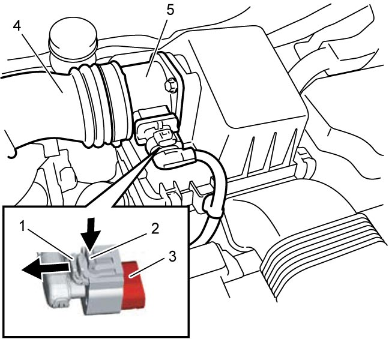

1C
| MAF Sensor with IAT Sensor-1 Removal and Installation |
NOTICE:
Failure to take proper precautions when handling the MAF sensor with IAT sensor-1 may lead to malfunction of the sensor.
•Do not disassemble the sensor.
•Do not drop or expose the sensors to shock. Any MAF sensor with IAT sensor-1 that has been dropped must be replaced.
•Do not clean the sensor.
•Do not direct compressed air from an air blow gun or the like to the sensor.
•Do not put a finger or any other object into the sensor.
•Do not drop or expose the sensors to shock. Any MAF sensor with IAT sensor-1 that has been dropped must be replaced.
•Do not clean the sensor.
•Do not direct compressed air from an air blow gun or the like to the sensor.
•Do not put a finger or any other object into the sensor.
NOTE:
If MAF sensor with IAT sensor-1 is replaced, initialize MAF data and fuel injection system part parameter in ECM.
For details, refer to Description of ECM Registration:D16AA.
Removal
1)Disconnect negative (–) cable at battery.
2)Disconnect connector from MAF sensor with IAT sensor-1 as follows.
a)Move connector lock pin (1) in arrow direction as shown in figure.
b)Push connector lock lever (2) and disconnect connector from MAF sensor with IAT sensor-1 (3).
3)Disconnect air cleaner outlet hoses (4) from MAF sensor with IAT sensor-1.
4)Remove MAF sensor with IAT sensor-1 (5) from air cleaner assembly.


 "Expand image")
Installation
Reverse removal procedure noting the following points.
•Tighten air cleaner outlet hose clamps to specified torque. 
•When replacing MAF sensor, initialize MAF sensor data and fuel injection system part parameter in ECM.
•When replacing MAF sensor, initialize MAF sensor data and fuel injection system part parameter in ECM.